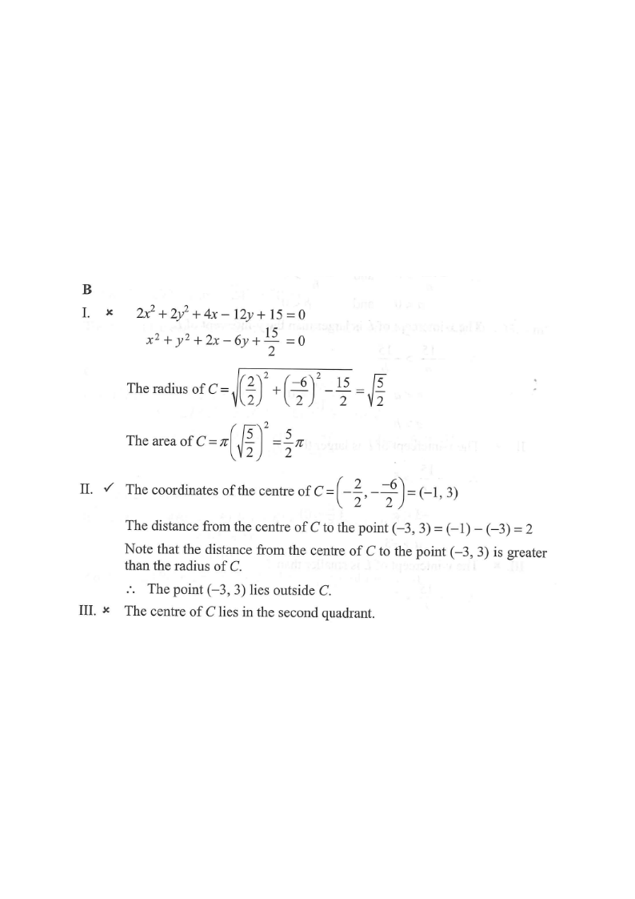

圓方程 · 圓心與半徑

全式除以 $2$：
$$x^{2}+y^{2}+2x-6y+\frac{15}{2}=0$$
圓心 $=(-1,\,3)$，
$$r^{2}=(-1)^{2}+3^{2}-\frac{15}{2}=10-7.5=2.5$$
即 $r=\dfrac{\sqrt{10}}{2}\approx1.58$。
$$A=\pi(2.5)=2.5\pi\neq25\pi$$
I 錯誤。
$$d=\sqrt{(-3+1)^{2}+(3-3)^{2}}=2>1.58$$
點在圓外，II 正確。
圓心 $(-1,3)$：$x<0$、$y>0$，在第二象限，III 錯誤。
只有 II 正確，選 B。